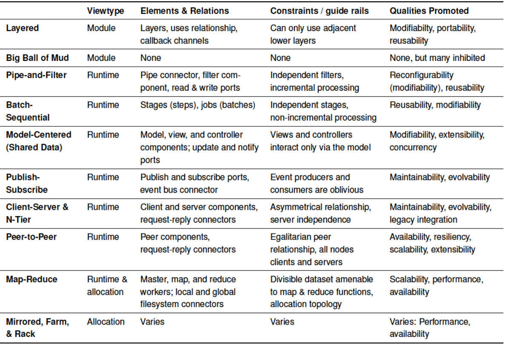
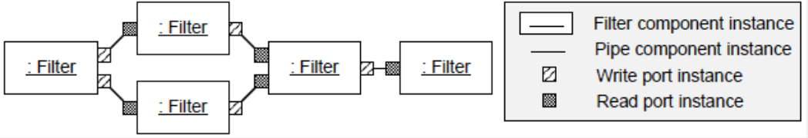
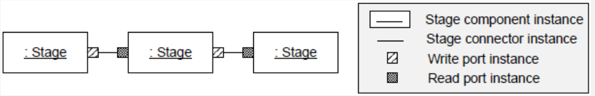
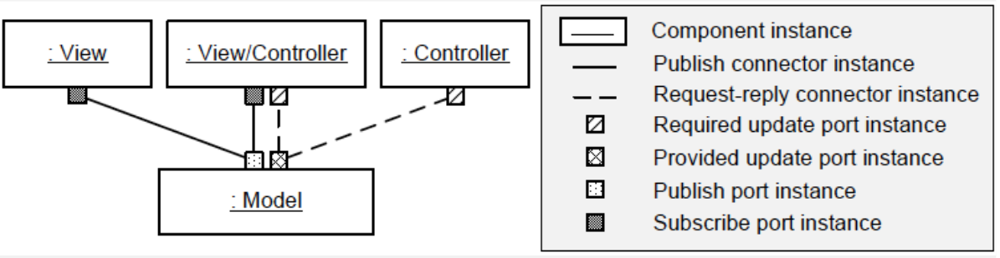
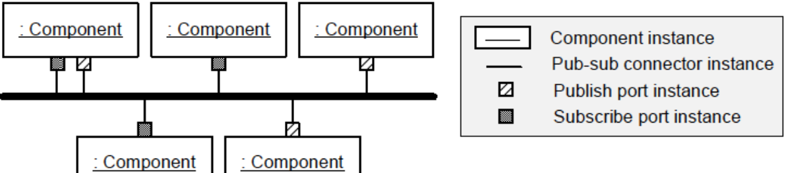
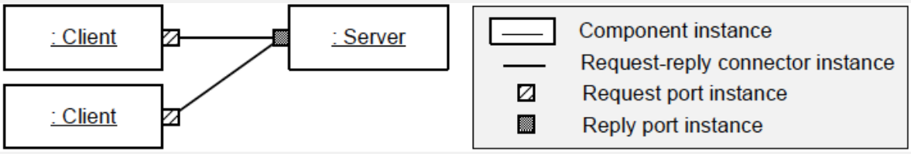
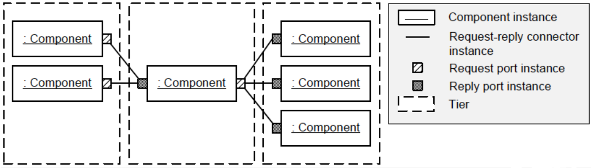

Teórica 11
Estilos de Arquitetura
Consiste em:
- Conjunto de tipos de componentes (p.e. processos, procedimentos, etc...) que executam alguma função em runtime;
- Um layout topológico de componentes que demonstram as suas relação em runtime;
- Um conjunto de restrições semânticas;
- Um conjunto de conetores (p.e. data streams, sockets, etc...) que mediam a comunicação entre componentes.
Um sistema que se conforme a um dado estilo, então deve usar esses tipos, o que irá restringir o design space.
Restrições
- Podem atuar como guias que apontam para onde queremos levar o sistema;
- Podemos pensar num estilo como um conjunto pré-fabricado de restrições a serem reutilizadas;
- A consistência trazida acerca das restrições de estilo podem encorajar a evolução clara do sistema, o que poderá tornar a manutenção mais fácil;
- A comunicação entre devs é melhorada.
Platonic vs Embodied
- Um estilo arquitetónico platonic é uma idealização;
- Geralmente, só se encontra em livros e muito raramente em source code.
- Um estilo arquitetónico embodied existe em sistemas reais;
- Por vezes viola as restrições estritas encontradas em estilos platónicos.
- Por vezes, podemos encontrar versões embodied do estilo em que servidores, de forma ocasional, enviam dados para os clientes;
- Dependendo da forma de implementação, poderá resultar num servidor que depende dos clientes.
Patterns vs Styles
- Design patterns são em menor escala que os estilos arquitetónicos;
- Os patterns podem aparecer em qualquer local no design e podem aparecer múltiplos patterns no mesmo design;
- Um sistema, usalmente, tem um único estilo arquitetónico dominante;
- Se um sistema tiver um estilo arquitetónico cliente-servidor, devemos esperar ver um componentes de cliente e servidor nas vistas de design top-level;
- O sistema também pode empregar patterns arquitetónicos, tal como um REST pattern.
Catálogo de Estilos

Estilo de Camadas
- O elemento essencial é a camada;
- A relação baseia-se num uses, ou seja, uma especialização da relação de dependência;
- Consiste numa stack de camadas;
- Cada camada atua como um máquina virtual para as camadas superiores de forma a ordenar as formas em DAG;
- Num estilo de camadas simples, cada camada apenas pode usar a camada diretamente abaixo;
- Atributos de qualidade promovidos: modificabilidade, portabilidade e reutilização;
- Pode variar muito entre a sua forma platonic e a sua forma embodied;
- Na prática, este estilo podem violar as suas restrições;
- Podemos ver camadas a saltar outras ou camadas inferiores a utilizar camadas superiores;
- As camadas inferiores podem comunicar de forma segura com camadas superiores se usarem um mecanismo de callback.
- "Lasagna Code" refere-se a um programa estruturado que utilize este estilo.
Big ball of mud style
- Não tem um estrutura evidente;
- É típica a partilha de informação de forma pormíscua, para permitir que a extensão de estruturas de dados se tornem efetivamente globais;
- Reparações e manutenção são convenientes e assemelham-se a remendos grosseiros, ao invés de refatorações elegantes;
- Não é feito qualquer esforço para forçar qualquer tipo de integridade conceptual ou consistência (spaghetti code);
- Estes sistemas têm má manutenção e extensabilidade;
- Este estilo é um estratégia de engenharia suficientemente boa.
Pipe & Filter Style
- Flow de dados através de pipes para filtrar o trabalho nos dados;
- A rede pipe-and-filter está a processar dados de forma contínua e incremental;
- Consiste em 4 elementos:
- Pipes;
- Filtros;
- Portas de leitura;
- Portas de escrita.
- Um filtro lê um input das portas de input, efetua algum processamento e escreve o output nas portas de output;
- Repete o processo até chegar à altura de parar;
- Os filtros podem enriquecer, refinar e transformar os dados;
- Cada filtro aplica uma função ao seu input;
- Os pipes apenas devem transportar dados num direção, sem trocar e ordenados;
- Os ciclos na rede são raros e por vezes proíbidos;
- Os filtros não devem interagir uns com os outros, até mesmo indiretamente, exceto através de pipes;
- Um filtro lê o input de forma incremental e, enquanto processa esse input, incrementalmente escreve o seu output.

Batch-Sequential Style
- Dados andam de stage em stage;
- Cada stage completa todo o seu processamento antes de escrever o seu output;
- Os dados podem andar entre stages numa stream, mas é mais vezes escrito num ficheiro em disco;
- Tem restrições semelhantes ao estilo pipe-and-filter;
- Cada stage é similarmente independente;
- Um stage depende dos dados que recebe;
- Os stage não interagem entre eles, exceto através das streams ou ficheiros de input e output.

Batch-Sequential vs Pipe & Filter
- Ambas decompõem a tarefa numa sequência fixa de computações, interagindo apenas através dos dados.
- Batch-Sequential:
- Grão grosso;
- Grande latência;
- Acesso externo ao input;
- Não tem concorrência;
- Não tem interação.
- Pipe & Filter:
- Grão fino;
- Resultados começam o processamento;
- Input localizado;
- Possível concorrência;
- Possível interação.
Model-Centered Style
- Componentes independentes interagem com um modelo central (data store), ao invés de interagirem uns com os outros;
- Todos os sistemas model-centered têm um componente model e múltiplos componentes views, controller ou view-controller;
- O estilo é relacionado a múltiplos design patters, incluindo o document-view, o MVC e o observer.

- As views e os controllers dependem apenas do model e não umas das outras;
- A modificabilidade é melhorada porque o produtor e o consumidor de informação estão separados;
- O sistema é extensível, uma vez que views e controllers inesperados são facilmente adicionados;
- Pode ser fácil de gerir e persistir o estado, visto que é centralizado no componente model;
- A concorrência pode ser promovida visto que as views e os controllers podem correr nas suas próprias threads ou processos;
- Este estilo é útil quando não sabemos a configuração futura do sistema.
Publish-Subscribe style
- Componentes independentes publicam eventos e subscrevem-se a eles;
- A componente de publicação é ignorante da razão principal quando um evento é publicado;
- Uma componente de subscrição não sabe o porquê ou quem publicou o evento.

- Este estilo define as portas de publicação e de subscrição e um conetor (um event bus connector);
- Qualquer tipo de componente pode publicar/subscrever eventos desde que utilize uma porta de publicação/subscrição;
- Um componente pode publicar um evento e múltiplos componentes podem subscrever o evento;
- O event bus connector entrega eventos:
- Publicadores confiam que os eventos são entregues ao subscritores;
- Subscritores confiam que recebem os eventos para os quais estão subscritos.
- Produtores e consumidores estão separados;
- O sistema é mais mantível e envolvível.
Client-server style & N-tier
- Clientes pedem serviços aos servidores de forma síncrona;
- O cliente pode pedir ao servidor que faça o trabalho;
- A comunicação é iniciada pelos clientes, não pelo servidor;
- O servidores não sabe a identidade do cliente até ser conectado por ele;
- Clientes devem saber a identidade do servidor ou como procurar por ele.

- Tem múltiplos pontos de variação:
- Conetores podem ser síncronos ou assíncronos;
- Podem existir limites quanto ao número de clientes ou servidores;
- Conetores podem manter ou não manter estado;
- A topologia do sistema pode ser estática ou dinâmica.
- Outra variante é o estilo N-Tier:

- Utiliza duas ou mais instâncias do estilo client-server de forma a ter uma série de tiers;
- Os pedidos devem seguir em apenas 1 direção;
- Um caso comum é um 3-tier system onde:
- o user intervém como um cliente para a lógica de negócio da camada do servidor;
- a camada da lógica de negócio do servidor age como um cliente para a camada de persistência do servidor.
- As camadas têm, exclusivamente, funcionalidades de responsabilidade;
- A camada de interface do utilizador é exclusivamente responsável para a interação do utilizador;
- A camada de persistência, exclusivamente, guarda os dados persistentes.
Peer-to-peer style
- Nodos comunicam entre eles como peers;
- Relações hierárquicas são proíbidas;
- Cada nodo tem uma habilidade, mas não obrigação, para atuar como o cliente e como servidor;
- O resultado é uma rede de nodos a operarem como peers;
- Um nodo pode pedir ou providenciar serviços a cada nodo;
- Os elementos do estilo peer-to-peer são semelhantes aos do estilo client-server;
- Um conector peer-to-peer tem papéis idênticos em ambos, permitindo a ambos que tenham pedidos e respostas;
- É um sistema igualitário, enquanto que o client-server é hierárquico.
Map-Reduce Style
- O estilo é apropriado para processar datasets grandes (motores de busca e redes sociais);
- Programas simples (de ordenação ou procura) executam lentamente em grandes datasets, se for utilizado um único computador;
- Enquanto o número de computadores utilizados aumenta, a probabilidade de um deles falhar também irá aumentar;
- Este estilo ativa a recuperação desses falhanços.
Mirrored, rack and farm styles
- Os estilos arquiteturais anteriores foram desde o módulo até ao runtime viewtypes;
- Os estilos de alocação viewtype são mais prováveis de ser discutidos por engenheiros de redes do que por arquitetos de software.